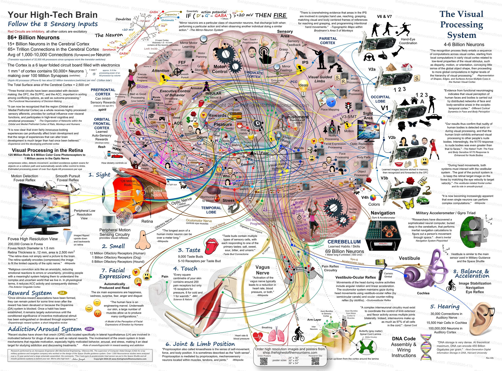

La estructura más compleja jamás estudiada
Cómo tu cerebro percibe el mundo
6 millones de conos para color y 120 millones de bastones para luz baja. La retina procesa imágenes antes de enviarlas al cerebro.
Sistema de adicción/arousal conectado directamente al sistema límbico, procesando emociones y memoria.
Dulce, salado, ácido, amargo y umami. Detectan los 5 sabores primarios en diferentes regiones de la lengua.
200 receptores de dolor, 15 de presión, 6 de frío y 1 de calor por cm². La piel es el órgano sensorial más grande.
La cóclea transforma vibraciones en señales eléctricas. El ADN almacena el cableado neural.
Similar al sensor de guía militar. Detecta rotación, aceleración lineal y orientación gravitacional.
Estabilización de imagen, navegación y reflejo ocular. Trabaja junto con la visión para orientación espacial.
Propiocepción: saber dónde está tu cuerpo sin mirar. El nervio vago conecta cerebro con órganos.
De la retina al córtex: un viaje de milisegundos
126M fotorreceptores convierten luz en señales eléctricas
1 millón de axones transmiten información visual
Estación de relevo y primer procesamiento
4-6 mil millones de neuronas procesan bordes y orientación
200,000 conos en solo 1.5mm. Área de máxima agudeza visual.
3 tipos de conos (RGB) permiten distinguir millones de colores.
Los bastones son 1000x más sensibles que los conos.
El cerebro procesa imágenes en ~13 milisegundos.
El componente fundamental del pensamiento
Si GABA > umbral → DISPARA
Especialización funcional del córtex
Los mensajeros químicos del cerebro
Estimulan la actividad neuronal
Calman la actividad neuronal
Reguladores químicos del cuerpo y la mente
Regula estrés y metabolismo
Estrés, pánico, "lucha o huida"
Intimidad, vínculos, confianza
Regula hambre y saciedad
Metabolismo, energía, crecimiento
Desarrollo muscular y libido
Sistema reproductivo femenino
Regula calcio en sangre
El "pequeño cerebro" con enormes capacidades
¡Contiene 3/4 de todas las neuronas del cerebro!
Control preciso de movimientos
Mantiene la postura y balance
Automatiza movimientos repetidos
Calcula movimiento en el espacio
La base de la empatía y el aprendizaje social
"Las neuronas espejo son una clase particular de neuronas visomotoras que se disparan tanto al realizar una acción particular como al observar a otro individuo realizando una acción similar."
Se activan al observar acciones de otros
Permiten imitar y aprender comportamientos
Base de la empatía y comprensión emocional
Fundamentales para el lenguaje